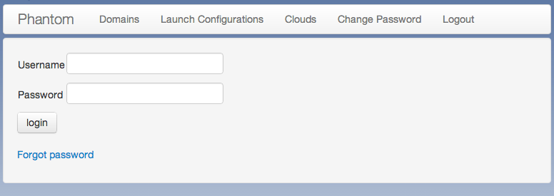
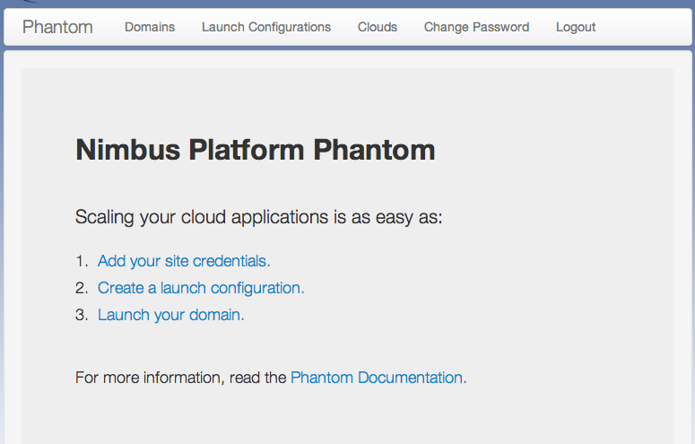
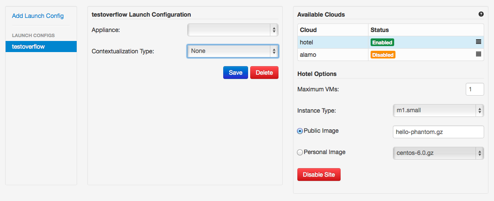
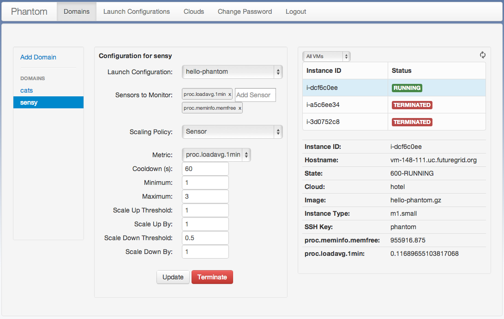

Phantom Quickstart¶
The best way to get familiar with Phantom is to try it out.
- Getting Access
- Login
- Configuring your Profile
- Creating a Launch Configuration
- Launching a Domain
- Updating a Domain
- Terminating a Domain
Getting Access¶
Phantom has been deployed as a service on FutureGrid and you can start using it there. In order to use Phantom, you will need a Phantom account and accounts on clouds you want to use with Phantom.
You can either apply for a Futuregrid account, and get access through Futuregrid, or if you do not plan on using Futuregrid, you can sign up for Phantom on its own.
Register a Phantom Account with Futuregrid¶
FutureGrid provides several different IaaS clouds that you can use with Phantom. Requesting a FutureGrid account will give you access to all FutureGrid clouds. Thus your first step to gain access is to request a FutureGrid account. Once you have a FutureGrid account, you will need to join an existing FutureGrid project or to create your own.
Once you are in an active FutureGrid project, you can get a Phantom account by emailing nimbus@mcs.anl.gov. We will create your Phantom account and send you instructions on how to use Phantom.
Register a Phantom Account without Futuregrid¶
If you would rather not sign up for Phantom through Futuregrid, you can sign up for Phantom without it, and use it with Amazon EC2. To do so, visit the Sign Up page, and create your account. Once your account is approved, you should receive an email with further instructions.
Once you have set up your account, log on to Phantom.
Login¶
Once you have the needed accounts you can log in. You will first be presented with a login screen:
If you have forgotten your account information you can click on the Forgot Password link. After logging in you will see the home page:
This page should guide you through the steps to start launching sets of virtual machines, which are called Domains in Phantom.
Configuring your Profile¶
Your profile is where your overall Phantom settings are stored. You can change your Phantom password here, and more importantly, you can set up your credentials with each cloud you use. In addition to setting up your cloud credentials, if you would like to use phantom with Chef, you can set up those credentials as well.
To set up your cloud credentials, go to your Profile page and add your cloud credentials for each cloud you intend to use:

All FutureGrid accounts should come pre-loaded with your credentials. If you wish to use EC2 in addition to FutureGrid clouds, you can add your credentials:
Adding EC2 Credentials¶
- Visit your profile
- Select the EC2 cloud
- Add your access key
- Add your secret key
- Click Save
Phantom will now fetch your ssh keys from EC2. If you haven’t uploaded a key to the clouds you want to use, please follow the instructions for EC2 and FutureGrid OpenStack. For Nimbus you can use this script (requires Python and Boto). When this is done:
- Choose an ssh keyname for your VMs
- Click Save again
Adding Chef Credentials¶
Open your knife.rb configuration file. Normally this is in ~/.chef/ on Mac and Linux, and c:\Users\<username>\.chef\ on Windows. If you are using Hosted Enterprise Chef, you can download this file from the Organizations page.
From this file you can read your Chef Server URL (chef_server_url), Chef Client Name (node_name) and Chef Validation Client Name (validation_client_name).
You will also need your client key and validator key. From Hosted Enterprise Chef, you should have downloaded them when you set up your account and placed them in your .chef directory. If you haven’t, you can generate a new client key on the Reset Key page found under the Users menu on the Organizations page, and a new validator key on the Organizations page.
Now that we have these values, we can put them in our profile:
- Visit your Chef Credentials
- Click “Add Chef Server”
- Choose a name for your server, and click “Add Chef Server”
- Add your Chef Server URL, Chef Client Name, and Chef Validation Client Name
- Paste your Chef Client Key (usually in a .pem file in your .chef directory)
- Paste your Chef Validator Key (usually in a .pem file in your .chef directory)
- Click Save Credentials
Adding an SSH Key¶
Phantom requires a copy of your public SSH key to allow you to log in to VMs that it starts for you. Often, you will have already uploaded an SSH key to the clouds you want to use with Phantom, but if you haven’t, Phantom provides a tool to do this.
If you haven’t yet created an SSH key at all, the FutureGrid site has good instructions for creating an SSH key . Once you have your key, you can upload it by:
- Set up one or more set of cloud credentials on the Cloud Credentials page on your profile.
- Go to the Add SSH Key page in your profile.
- Select the clouds you would like to upload to on the left
- Enter a name for your key into the Name field
- Paste your key into the Key field. (Hint: on the Mac, you can type “pbcopy < ~/.ssh/id_rsa.pub” into your terminal to copy your key)
- Click the “Upload SSH Key” button to upload your key
Once you have done this, you can enable the key by following the steps outlined above under “Adding EC2 Credentials”.
Creating a Launch Configuration¶
Now that your credentials are configured, you can create a launch configuration. A launch configuration is a list of which VM images you would like to start on which clouds. You will provide an ordering for the list of clouds to start VMs on.
Go to the Launch Configurations page:
Create a Launch Configuration¶
- Click Add Launch Config
- Name your Launch Configuration
Our example is named testoverflow.
Now we will create a list of clouds in the order we would like to have Phantom use them. This way you can prioritize your preferred clouds, while still using other clouds when your preferred ones are not available.
Adding a Cloud¶
- Select a cloud from the list of clouds under Launch Configuration
- Specify the maximum number of VMs you would like on this cloud (-1 means infinity)
- Select an instance type (m1.small is a good choice if you have no preference)
- Select the image you wish to launch. You can either pick a Personal Image from the list, or type in the name of a Public Image supplied by someone else. If you are using a FutureGrid cloud, you can use hello-cloud, for example.
- If you like, you can provide User Data that will be provided on the VM via the EC2 or Nimbus metadata server.
- Click Enable to add the cloud configuration to the list of clouds on the right.
You can now add additional clouds if you like by repeating the above steps.
Once you have enabled the clouds you would like to use, you can drag and drop the clouds change the launch priority of these clouds. Phantom will try to start as many VMs as it can (up to the maximum you specified) on the first cloud in the list before starting VMs on the second cloud.
When you are happy with the order you have selected, click the Save button Once saved, you can now launch a domain using this launch configuration.
Appliances¶
Appliances are ready-made launch configuration to help you start domains without having to manually enter all the settings. If you select an appliance, the image and contextualization settings will already be configured for you. You will only have to select the clouds you want to use, the maximum number of VMs on each cloud, and the instance types.
Setting up Contextualization¶
Contextualization allows you to configure your virtual machines so that they provide fully configured applications and services.
Contextualization is optional: you can leave the User Data field empty, or select None as contextualization type. If you would like to contextualize your virtual machines, you can do so using several mechanisms:
- The plain user-data field will put the information on the cloud’s metadata server for access from the VM
- You can specify a Chef runlist and dictionary of attributes. If you would like to know more about Chef, you can visit #LearnChef.
- You can Phantomize a VM which installs and runs tcollector for use with sensor autoscaling domains (see Using Sensors with your VM Images)
To set up plain user-data:
- Select the Launch Configuration you would like to use, or make a new one
- Under Contextualization Type, choose “User Data”
- Fill in your user data under in the User Data field
- Click Save
To set up Chef contextualization:
- Select the Launch Configuration you would like to use, or make a new one
- Under Contextualization Type, choose “Chef”
- Fill in your Chef runlist (in json format)
- Fill in your Chef attributes (in json format)
- Click Save
To set up Phantomize:
- Select the Launch Configuration you would like to use, or make a new one
- Under Contextualization Type, choose “Phantomize”
- Click Save
Note
Your virtual machine image must be configured to download and execute user-data on boot. This is done automatically if you have cloud-init installed. OpenStack images are generally already configured to run cloud-init on boot.
Launching a Domain¶
Now that you have set up your credentials and created a launch configuration, you can launch and manage domains that will launch and monitor VMs for you.
To launch a new domain, go to the domains page:
Creating a simple domain¶
To create a domain:
- Click Add Domain
- Choose a name for the domain in the popup window
- Pick the Launch Configuration you created earlier
- Leave Sensors to Monitor blank for now
- Make sure Scaling Policy is set to “Multi Cloud”
- Type in the number of VMs you would like Phantom to start
- Click Start
Phantom is now starting your Domain, and in turn, starting your VMs. You should see the list of VMs that Phantom has started on the right under Details. This information is updated automatically.
When you see that your VM is RUNNING, it is now ready to use.
Creating a sensor autoscaling domain¶
If you would like to create a sensor autoscaling domain, ensure that you have tcollector installed and configured on your VM image, or that you have used the Phantomize contextualization. You can also use the hello-phantom.gz public image on FutureGrid, as described on the Using Sensors with your VM Images page.
Then:
- Click Add Domain
- Choose a name for the domain in the popup window
- Pick the Launch Configuration you created earlier
- Type a sensor to monitor (for instance proc.loadavg.1min) at the Add Sensor box, and then a space
- Make sure Scaling Policy is set to “Sensor”
- Fill out the sensor policy parameters: a) Metric is the metric to base scaling actions on b) Cooldown is the number of seconds Phantom should wait between scaling actions. This prevents Phantom from starting and stopping VMs too often c) Minimum is the minimum number of VMs to maintain d) Maximum is the maximum number of VMs to start e) Scale Up Threshold: When the metric value is above this value, Phantom will start VMs to compensate f) Scale Up By: The number of VMs to start when the Scale Up Threshold is exceeded g) Scale Down Threshold: When the metric value is below this value, Phantom will terminate VMs to compensate h) Scale Down By: The number of VMs to terminate when the Scale Down Threshold is exceeded
- Click Start
Updating a Domain¶
Once you have started a Domain, you may wish to adjust the settings you picked earlier.
Changing the number of running VMs¶
For example, you may wish to increase or decrease the number of VMs that are running as a part of your domain. To do this:
- Select your domain from the list of domains on the left
- Change the number of VMs in the domain
- Click Update
You should now see the status bar working and the details view should show the updated number of VMs.
Adding a sensor to monitor¶
If you would like to start monitoring specific sensors for your domain:
- Select your domain from the list of domains on the left
- Type the name of a tcollector sensor, like proc.loadavg.1min in the Add Sensor box, and then a space
- Click Update
If your VM image has tcollector installed on it, you should now see the status bar working and the details view should show the sensor value.
You can discover other sensors available to you by typing partial names of sensors in the Add Sensor box, and seeing a list of what is available. Some good prefixes to explore are df, proc, net, and io. Each of these prefixes has a number of interesting metrics available. For example, df.1kblocks.used, for used disk space, proc.loadavg.1min for load, or proc.meminfo.highfree for available memory.
Terminating a Domain¶
When you wish to terminate a domain:
- Select your domain from the list of domains on the left
- Click Terminate
You should now see the status bar working, and soon, your domain, as well as all of the VMs started by it, will be terminated.